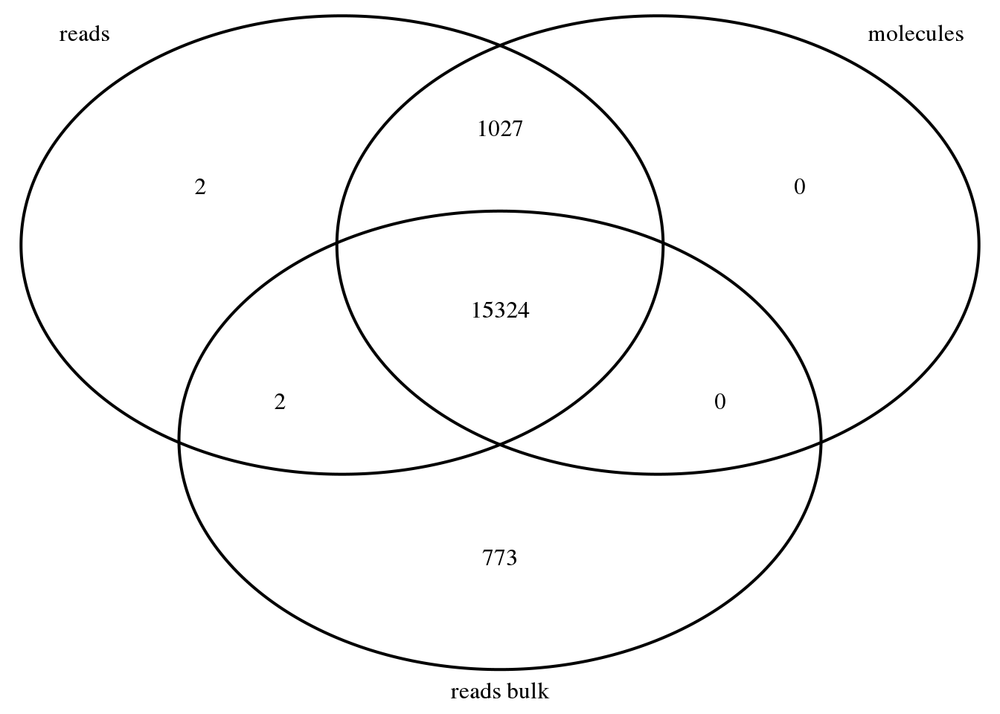
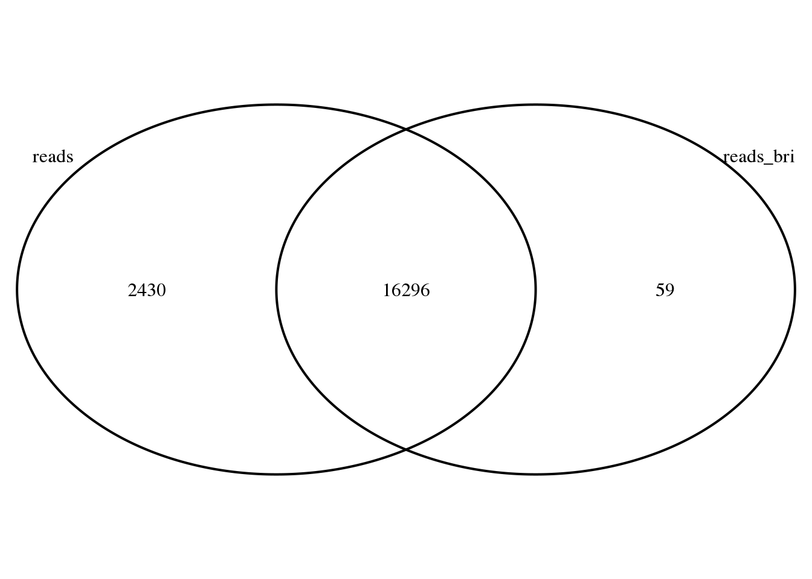

library("data.table")
library("dplyr")
library("VennDiagram")Import data from John’s Github:
reads_raw <- fread("../../singleCellSeq/data/reads-raw-single-per-sample.txt")
bri_reads_raw <- fread("../../single-cell/data/counts-matrix/reads-raw-single-per-sample.txt"
)
setDF(bri_reads_raw)
reads_raw[1:10, 10:20]## ENSG00000187634 ENSG00000268179 ENSG00000188976 ENSG00000187961
## 1: 0 0 57 0
## 2: 0 0 140 0
## 3: 0 0 1 0
## 4: 0 0 8 0
## 5: 0 0 167 0
## 6: 0 0 55 0
## 7: 0 0 3 0
## 8: 0 0 164 0
## 9: 0 0 105 0
## 10: 0 0 76 0
## ENSG00000187583 ENSG00000187642 ENSG00000188290 ENSG00000187608
## 1: 0 0 0 1
## 2: 0 0 0 249
## 3: 0 0 0 0
## 4: 0 0 0 3
## 5: 0 0 0 42
## 6: 0 0 0 8
## 7: 0 0 0 48
## 8: 0 0 0 216
## 9: 0 0 0 3
## 10: 0 0 0 69
## ENSG00000188157 ENSG00000237330 ENSG00000131591
## 1: 30 0 0
## 2: 24 0 0
## 3: 2 0 0
## 4: 30 0 0
## 5: 77 0 0
## 6: 44 0 1
## 7: 8 0 5
## 8: 24 0 0
## 9: 18 0 0
## 10: 95 0 0bri_reads_raw[1:10, 10:20]## ENSG00000187634 ENSG00000268179 ENSG00000188976 ENSG00000187961
## 1 0 0 58 1
## 2 0 0 140 0
## 3 0 0 1 0
## 4 0 0 10 1
## 5 0 0 168 79
## 6 0 0 90 0
## 7 0 0 4 1
## 8 0 0 168 0
## 9 0 0 122 122
## 10 0 0 77 17
## ENSG00000187583 ENSG00000187642 ENSG00000188290 ENSG00000187608
## 1 0 0 0 1
## 2 0 0 0 246
## 3 0 0 0 0
## 4 0 0 0 3
## 5 0 0 0 43
## 6 0 0 0 9
## 7 0 0 0 49
## 8 0 0 0 215
## 9 0 0 0 3
## 10 0 0 0 96
## ENSG00000188157 ENSG00000237330 ENSG00000131591
## 1 34 0 0
## 2 48 0 0
## 3 2 0 0
## 4 69 0 0
## 5 91 0 0
## 6 110 0 2
## 7 39 0 4
## 8 27 0 0
## 9 19 0 0
## 10 139 0 0My data consitently shows higher gene counts for the genes and samples I am looking at. I am going to transpose my data similar to the gene_x_sample_count_matrix.Rmd anaylsis so I can see if I detected more genes.
bri_reads_raw <- fread("../../single-cell/data/counts-matrix/reads-raw-single-per-sample.txt"
)
setDF(bri_reads_raw)Create annotation file for the data.
anno <- read.table("../../singleCellSeq//data/annotation.txt", header = TRUE,stringsAsFactors = FALSE)
anno_bri <- bri_reads_raw %>%
select(individual:well) %>%
mutate(batch = paste(individual, replicate, sep = "."),
sample_id = paste(batch, well, sep = "."))
head(anno_bri)## individual replicate well batch sample_id
## 1 NA19098 r1 A01 NA19098.r1 NA19098.r1.A01
## 2 NA19098 r1 A02 NA19098.r1 NA19098.r1.A02
## 3 NA19098 r1 A03 NA19098.r1 NA19098.r1.A03
## 4 NA19098 r1 A04 NA19098.r1 NA19098.r1.A04
## 5 NA19098 r1 A05 NA19098.r1 NA19098.r1.A05
## 6 NA19098 r1 A06 NA19098.r1 NA19098.r1.A06Transpose matrix.
reads_bri <- bri_reads_raw %>%
select(starts_with("ENSG"), starts_with("ERCC")) %>%
t
colnames(reads_bri) <- anno_bri$sample_id
reads_bri[1:5, 1:5]## NA19098.r1.A01 NA19098.r1.A02 NA19098.r1.A03
## ENSG00000186092 0 0 0
## ENSG00000237683 0 0 0
## ENSG00000235249 0 0 0
## ENSG00000185097 0 0 0
## ENSG00000269831 0 0 0
## NA19098.r1.A04 NA19098.r1.A05
## ENSG00000186092 0 0
## ENSG00000237683 48 0
## ENSG00000235249 0 0
## ENSG00000185097 0 0
## ENSG00000269831 0 0molecules_raw_bri <- fread("../../single-cell/data/counts-matrix/molecules-raw-single-per-sample.txt")
setDF(molecules_raw_bri)
dim(molecules_raw_bri)## [1] 72 20422Confirm order:
stopifnot(anno_bri$individual == molecules_raw_bri$individual,
anno_bri$replicate == molecules_raw_bri$replicate,
anno_bri$well == molecules_raw_bri$well)Transpoe matrix:
molecules_bri <- molecules_raw_bri %>%
select(starts_with("ENSG"), starts_with("ERCC")) %>%
t
colnames(molecules_bri) <- anno_bri$sample_id
molecules_bri[1:5, 1:5]## NA19098.r1.A01 NA19098.r1.A02 NA19098.r1.A03
## ENSG00000186092 0 0 0
## ENSG00000237683 0 0 0
## ENSG00000235249 0 0 0
## ENSG00000185097 0 0 0
## ENSG00000269831 0 0 0
## NA19098.r1.A04 NA19098.r1.A05
## ENSG00000186092 0 0
## ENSG00000237683 2 0
## ENSG00000235249 0 0
## ENSG00000185097 0 0
## ENSG00000269831 0 0reads_bulk_raw_bri <- fread("../../single-cell/data/counts-matrix/reads-raw-bulk-per-sample.txt")
setDF(reads_bulk_raw_bri)Create annotation file for bulk samples.
anno_bulk_bri <- reads_bulk_raw_bri %>%
select(individual:well) %>%
mutate(batch = paste(individual, replicate, sep = "."),
sample_id = paste(batch, well, sep = "."))
head(anno_bulk_bri)## individual replicate well batch sample_id
## 1 NA19098 r1 bulk NA19098.r1 NA19098.r1.bulkTranspose bulk read information.
reads_bulk_bri <- reads_bulk_raw_bri %>%
select(starts_with("ENSG"), starts_with("ERCC")) %>%
t
colnames(reads_bulk_bri) <- anno_bulk_bri$sample_idstopifnot(rownames(reads_bulk_bri) == rownames(reads_bri),
rownames(reads_bri) == rownames(molecules_bri))
genes_observed_reads_bulk_bri <- rownames(reads_bulk_bri)[rowSums(reads_bulk_bri) > 0]
genes_observed_reads_bri <- rownames(reads_bri)[rowSums(reads_bri) > 0]
genes_observed_molecules_bri <- rownames(molecules_bri)[rowSums(molecules_bri) > 0]
stopifnot(genes_observed_molecules_bri %in% genes_observed_reads_bri)genes_venn_bri <- venn.diagram(x = list("reads" = genes_observed_reads_bri,
"molecules" = genes_observed_molecules_bri,
"reads bulk" = genes_observed_reads_bulk_bri),
filename = NULL, euler.d = FALSE, scaled = FALSE)
grid.newpage()
grid.draw(genes_venn_bri)
Unlike the full data from git_hub. This data set has reads that are shared between reads and bulk but not in molecules. This could be due to the small samples size in this set.
reads_raw <- fread("../../singleCellSeq/data/reads-raw-single-per-sample.txt")
reads <- reads_raw %>%
select(starts_with("ENSG"), starts_with("ERCC")) %>%
t
genes_observed_reads <- rownames(reads)[rowSums(reads) > 0]
bri_github_ven <- venn.diagram(x = list("reads" = genes_observed_reads,
"reads_bri" = genes_observed_reads_bri),
filename = NULL, euler.d = FALSE, scaled = FALSE)
grid.newpage()
grid.draw(bri_github_ven)
The excess on the reads side may be due to the individual differneces. My analysis shows 59 unique genes not found in the githup analysis.
Compare UMI-tools and unitools packages:
UMI-tools:
Extract: UMIs are removed and appended to the read name. Any other barcode, for example a library barcode, is left on the read.
dedup: (The purpose of this command is to deduplicate BAM files based on the first mapping co-ordinate and the UMI attached to the read. It is assumed that the FASTQ files were processed with extract_umi.py before mapping and thus the UMI is the last word of the read name.) dedup can be run with multiple methods to identify group of reads with the same (or similar) UMI(s), from which a single read is returned. All methods start by identifying the reads with the same mapping position.
The simpliest methods, unique and percentile, group reads with the exact same UMI. The network-based methods, cluster, adjacency and directional, build networks where nodes are UMIs and edges connect UMIs with an edit distance <= threshold (usually 1). The groups of reads are then defined from the network in a method-specific manner. For all the network-based methods, a single read is returned with the most abundant UMI in each read group. For details about how the read is selected, see ‘Selecting the representative read’ below.
Umitools:
Trim: Incorporate the UMI into the read name in order to later identify while processing mapped reads.
rmdup: For any given start site, save only one read per UMI. Writes bed3+ to stdout with before and after counts per start.
Difference in dedup step: UMI-tools explicitly says it deals with similar UMI’s, umitools talks about specifying –mismatched for dealling with this.
This site was created with R Markdown